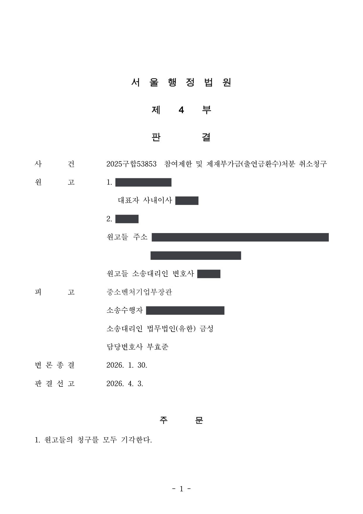
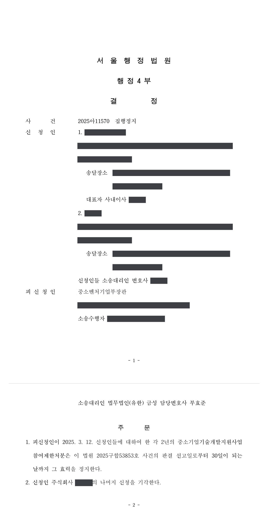

국가연구개발사업 참여제한·제재부가금 부과처분 취소소송 및 집행정지
서울행정법원 2025구합53853 · 2025아11570 · 담당변호사 부효준
판결문


사건의 요지
중소기업기술개발지원사업 과제의 연구개발비 사용을 둘러싼 2년 참여제한처분과 제재부가금 부과처분이 다투어진 사건입니다. 집행정지 단계에서는 참여제한처분의 효력만 정지되었고, 본안에서는 청구가 모두 받아들여지지 않았습니다.
사건의 주요 내용
원고 회사는 2020년 중소기업기술개발 지원사업 과제에 선정되어, 연구개발기간을 2020년 9월부터 2021년 9월까지 1년으로 하고 연구개발비 3억 원을 지원받는 협약을 전문기관과 체결하였습니다. 과제책임자는 원고 회사의 대표자였고, 블록체인 기술과 관련된 개발 과제였습니다.
원고들이 2021년 11월 최종보고서를 제출한 뒤, 2022년 1월 최종평가에서 과제는 20점으로 '현장점검대상' 판정을 받았습니다. 같은 해 5월 현장점검을 거쳐 재평가 대상으로 분류된 과제는 9월 최종평가 재평가에서 50점을 받아 '미완료(극히 불량)'로 판정되었습니다.
처분청은 2025년 3월 최종평가 결과가 국가연구개발혁신법 제32조 제1항 제1호의 '연구개발과제의 수행과정과 결과가 극히 불량한 경우'에 해당한다는 이유로 원고 회사와 과제책임자에게 각 2년의 국가연구개발활동 참여제한처분을, 원고 회사에 정부출연금 199,983,000원에서 자동회수금을 뺀 199,472,058원의 제재부가금 부과처분을 하였습니다. 원고들은 각 처분의 취소를 구하는 소송을 제기하면서 집행정지를 신청하였습니다.
원고의 주장
- 최종평가를 위한 연구개발과제평가단을 국가연구개발혁신법 시행령 제27조 제1항·제2항·제5항에 따라 구성하지 않았으므로 평가단 구성에 위법이 있다고 주장하였습니다.
- 과제를 성실히 수행하여 사업계획서에서 목표로 정한 기술개발을 완료하였고 상표·특허 출원도 마쳤으며, 협회 산하 연구소의 성능평가에서 일부 성능지표가 목표에 도달하였고 사업화도 진행 중이므로, 수행과정과 결과가 극히 불량하다고 볼 수 없어 처분사유가 존재하지 않는다고 주장하였습니다.
- 최종평가와 재평가에서 연구개발성과보다 자금 운용에 관한 질문이 주로 이루어졌고 비대면 평가로 시연과 검증이 제한되어 평가의 객관성과 공정성이 훼손되었다고 주장하였습니다.
- 성과물을 도출하고 과제 종료 후에도 개발을 계속하고 있는 점, 외부 규제와 블록체인 기술적 난제로 연구개발 일정이 지연된 점, 처분으로 받는 불이익이 큰 점을 들어 비례원칙에 어긋나는 재량권 일탈·남용이라고 주장하였습니다.
부효준 변호사의 주장
- 연구개발과제평가위원 후보단은 범부처통합연구지원시스템을 통하여 구성되었고, 처분청은 그 후보단 가운데에서 평가위원을 선정하였으며 선정평가에 참여한 위원들도 평가단에 포함되었으므로, 평가단 구성은 관련 법령이 정한 절차와 기준에 부합한다고 반박하였습니다.
- 기술개발 성과의 평가는 고도의 전문적·기술적 판단으로서 중대한 하자가 없는 한 존중되어야 하고, 이 사건에서는 최종평가·현장점검·재평가·이의신청에 따른 재평가 등 여러 단계를 거치며 원고들에게 의견 제출과 결과물 시연의 기회가 부여되었으며, 평가위원들의 소속·경력·전공에 비추어 그 전문성을 의심할 사정이 없다고 주장하였습니다.
- 협약과 운영요령에 따라 과제 종료 후 2개월 안에 공인인증기관의 시험성적서를 첨부한 최종보고서를 제출하여야 하는데 원고들은 종료 약 1년 4개월 뒤에야 시험성적서를 제출하였고, 특허출원도 종료 후에 이루어졌으므로 사후 성과로 평가의 적정성을 다툴 수 없으며, 연구노트도 최종평가 당시 제출되지 않았고 재평가 때 낸 것에는 작성자·점검자 기재가 없다는 점을 지적하였습니다.
- 처분은 국가연구개발혁신법 제32조와 같은 법 시행령 제59조 [별표 6]·[별표 7]의 기준에 부합하며, 정부출연금이 지급 목적과 용도에 따라 적정하게 지출되도록 할 공익이 원고들의 불이익보다 작지 않다고 주장하였습니다.
법원의 판단
법원은 먼저 평가단 구성에 관하여, 국가연구개발혁신법 제14조와 같은 법 시행령 제27조에 따라 범부처통합연구지원시스템으로 구성된 평가위원 후보단 가운데 처분청이 평가위원을 선정하였고 선정평가에 참여한 위원들도 포함되었으므로, 관련 법령이 정한 절차와 기준에 부합한다고 보았습니다.
처분사유에 관하여는 고도의 전문적·기술적 사항에 관한 행정청의 판단은 사실인정에 중대한 오류가 있거나 객관적으로 불합리하다는 특별한 사정이 없는 한 존중되어야 한다는 대법원 판례(2022. 9. 16. 선고 2021두58912 판결)를 전제로, 전문성을 갖춘 위원들이 각 단계에서 기술개발 과정의 적정성, 결과물의 성능·시험평가, 최종목표 달성도, 사업화 가능성을 평가한 결과를 존중하였습니다.
과제 종료 후 2개월 안에 내야 할 공인인증기관의 시험성적서를 약 1년 4개월이 지나서야 제출한 점, 목표 달성 여부는 최종평가 당시 제출된 자료를 기준으로 판단하여야 하므로 종료 뒤에 얻은 인증이나 특허출원으로 평가의 적정성을 다툴 수 없다는 점, 재평가 단계에서 낸 연구노트에 작성자·점검자 기재와 개발 내용의 연계성이 없다는 점을 들어 '수행과정과 결과가 극히 불량한 경우'에 해당한다고 판단하였습니다.
평가의 공정성 주장은 여러 단계의 절차에서 의견 제출과 시연의 기회가 부여되었다는 이유로 받아들이지 않았고, 처분이 시행령 [별표 6]·[별표 7]의 기준에 부합하며 정부출연금의 적정한 사용을 확보할 공익이 원고들의 불이익보다 작지 않다고 보아 재량권 일탈·남용도 부정하여 원고들의 청구를 모두 받아들이지 않았습니다. 앞서 집행정지 사건(2025아11570)에서는 참여제한처분의 효력만 본안 판결 선고일부터 30일이 되는 날까지 정지되었고, 제재부가금 부과처분 부분은 회복하기 어려운 손해나 긴급한 필요가 인정되지 않는다는 이유로 받아들여지지 않았습니다.
행정청이 관계 법령이 정하는 바에 따라 고도의 전문적이고 기술적인 사항에 관하여 전문적인 판단을 하였다면, 판단의 기초가 된 사실인정에 중대한 오류가 있거나 판단이 객관적으로 불합리하거나 부당하다는 등의 특별한 사정이 없는 한 존중되어야 한다(대법원 2022. 9. 16. 선고 2021두58912 판결 등 참조).
이 사건 과제는 사업계획서에 정한 기술개발을 목표로 하고 있고, 그 선정 경위, 구체적인 개발 내용 및 범위 등에 비추어 볼 때 그 성과에 관한 평가에는 전문적이고 기술적인 판단이 포함되어 있다. 따라서 이와 같은 전문적인 영역에 관한 각 단계의 평가위원들의 판단은 그 과정이나 내용에 중대한 하자가 없는 한 최대한 존중되어야 한다.
서울행정법원 2025구합53853 판결 이유 '3. 다. 처분사유 존부에 관한 판단' 1), 2) 가)
이 사건 과제의 목표 달성 여부는 최종평가 당시 제출된 자료를 기준으로 판단하여야 하므로, 과제 종료 이후에 추가로 획득한 인증이나 성과를 근거로 기존 평가의 적정성을 다툴 수는 없다. 나아가 원고들이 제출한 상표 및 특허출원 자료들만으로 기술개발 성과가 객관적으로 입증되었다고 보기 어렵고, 특히 특허출원은 과제의 연구개발 기간이 종료된 이후에 이루어진 점에 비추어 보면, 원고들이 주장하는 사정만으로는 이 사건 과제의 목표가 달성되었다고 인정하기 부족하다. 따라서 원고들의 위 주장은 받아들이기 어렵다.
서울행정법원 2025구합53853 판결 이유 '3. 다. 2) 다)'
국가연구개발사업에 지원되는 정부출연금은 과학기술개발 및 혁신을 통하여 국가혁신역량을 제고하고 국민경제의 발전과 국민의 삶의 질 향상에 이바지하기 위하여 한정된 국가 예산에서 마련되는 것이므로, 과제 수행에 대한 사후 평가 및 그에 따른 제재는 필수적이며, 이를 엄격히 관리할 공익적 필요성이 크다.
이 사건 처분은 국가연구개발혁신법 제32조 제1항, 제3항, 그 시행령 제59조 제1항, 제2항 및 [별표 6], [별표 7]에서 정한 기준에 부합하고, 그 기준 자체가 헌법 또는 법률에 합치되지 않는다고 볼 사정도 없으며, 처분사유가 된 위반행위의 내용과 입법목적 및 규제의 필요성 등을 고려할 때 위 기준에 따른 이 사건 처분이 현저히 부당하다고 보기 어렵다.
정부출연금 제도의 방만한 운영과 수혜자들의 도덕적 해이를 방지하고 정부출연금이 지급 목적과 용도에 따라 적정하게 지출되도록 할 공익이 이 사건 처분으로 원고들이 입게 되는 불이익보다 작다고 볼 수 없다.
서울행정법원 2025구합53853 판결 이유 '3. 라. 재량권 일탈·남용에 관한 판단'
※ 판결 이유 가운데 이 사건의 판단 기준이 된 부분을 그대로 옮긴 것으로, 당사자 이름 등은 가렸습니다.
이 사건이 보여 주는 것
최종평가에서 '극히 불량' 판정을 받으면 몇 해 뒤에라도 참여제한과 함께 정부출연금에 가까운 금액의 제재부가금이 부과될 수 있습니다. 법원은 기술개발 성과의 평가를 전문적·기술적 판단으로 보아 평가위원들의 판단을 폭넓게 존중하므로, 평가 결과 자체를 소송에서 뒤집기는 쉽지 않습니다. 평가단 구성의 적법성을 다투려면 후보단 구성과 위원 선정 경위를 구체적으로 짚어야 합니다.
다툼의 실마리는 최종평가 '당시'에 무엇을 제출하였는가에 있습니다. 공인인증기관의 시험성적서는 과제 종료 후 정해진 기한(이 사건에서는 2개월) 안에 최종보고서에 첨부하여야 하고, 종료 뒤에 얻은 특허출원·인증·사업화 성과로는 평가의 적정성을 다툴 수 없습니다. 연구노트도 작성자와 점검자를 기재하고 개발 내용이 이어지도록 평소에 작성해 두어야 수행과정의 적정성을 인정받을 수 있습니다. 한편 집행정지 단계에서는 참여제한처분의 효력은 정지되었으나 금전 부과처분인 제재부가금은 정지되지 않았다는 점도 참고할 만합니다.
비슷한 처분을 받으셨다면
국가연구개발 제재처분은 사전통지를 받은 날부터 20일 이내에 재검토 요청 의견을 내고, 처분이 있음을 안 날부터 90일 이내에 취소소송을 제기해야 합니다. 처분서나 사전통지서를 받은 날짜부터 확인해 드립니다.